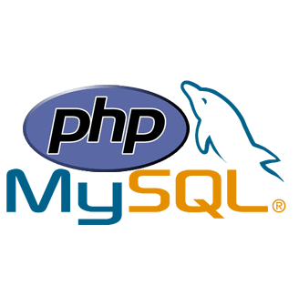
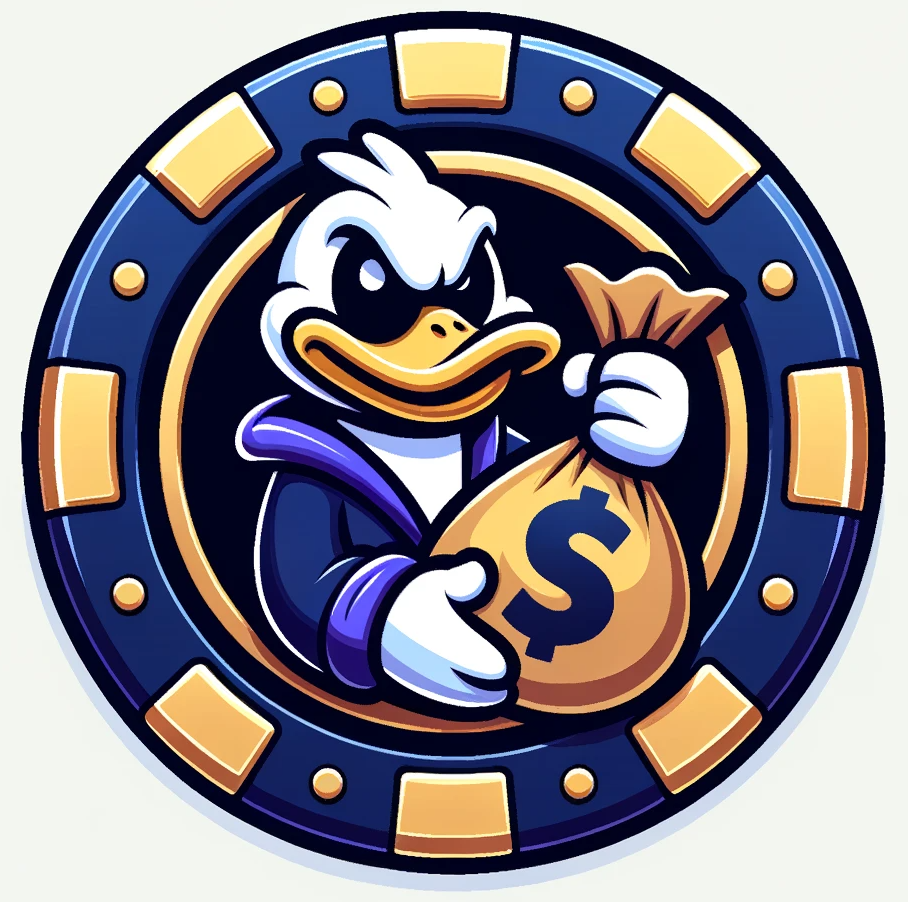
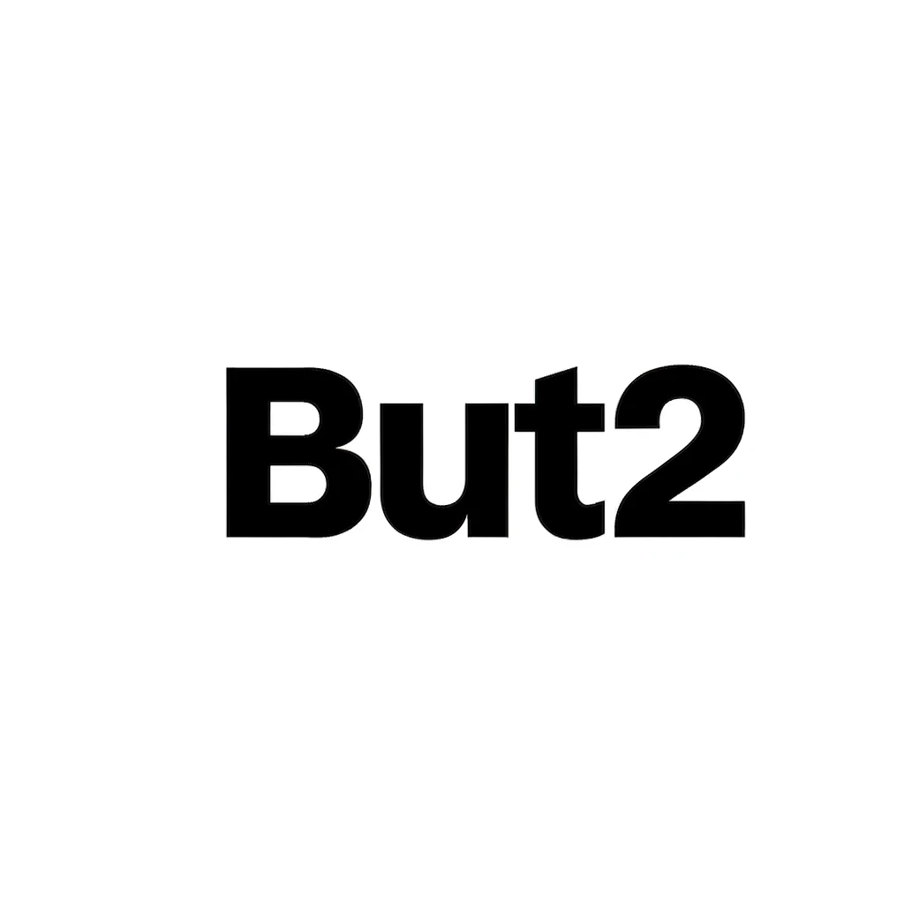
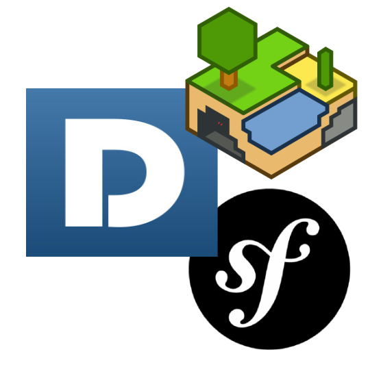
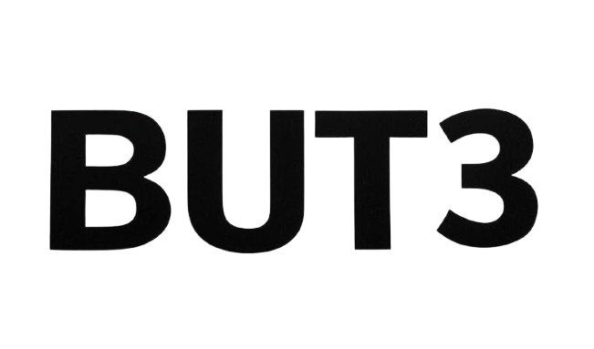

2026 – 2027
Master Recherche et Études en Management (REM)
IAE Montpellier
Formation orientée vers la recherche, l'analyse et les méthodes d'étude en management.
Double diplomation avec le Master CMSIAnalyste fonctionnel · Chef de projet ERP
Double cursus CMSI & REM — IAE Montpellier
ERP · Systèmes d'information · Processus métiers
Mon objectif : évoluer vers le conseil ERP, à l'interface des enjeux métier, organisationnels et techniques.
Chef de projet ERP en alternance chez SELVEA, je participe au pilotage d'un déploiement d'ERP : analyse des processus, paramétrage, reprise des données, coordination des intervenants et accompagnement des utilisateurs.
Diplômé d'un BUT Informatique, parcours IAMSI, je prépare à l'IAE Montpellier deux masters en parallèle : Consulting et Management des Systèmes d'Information (CMSI) et Recherche et Études en Management (REM).
Mon parcours professionnel, complété par cette spécialisation en systèmes d'information, nourrit une approche concrète de l'analyse fonctionnelle et de l'amélioration des processus.
Double cursus de master à l'IAE Montpellier, après un BUT Informatique et une reprise d'études.
2026 – 2027
Formation orientée vers la recherche, l'analyse et les méthodes d'étude en management.
Double diplomation avec le Master CMSI2025 – 2027
Conseil en systèmes d'information, management de projets SI et transformation des organisations.
Double diplomation avec le Master REM2022 – 2025
Intégration d'applications et management du système d'information.
2021 – 2022
Diplôme d'accès aux études universitaires, option scientifique.
2020
Formation au métier d'éducateur sportif.
Recueil des besoins, cartographie des processus, cahiers des charges, spécifications et tests.
Herakles, EBP, Dolibarr, Odoo ; paramétrage, reprise de données, formation et accompagnement.
UML, modélisation des processus, méthodes Agile / Scrum et coordination des acteurs.
SQL, PL/SQL, NoSQL, Excel, VBA, Power BI et fiabilisation de données.
JavaScript, PHP, Google Apps Script et automatisation de tâches et de flux métiers.
Git, Docker, suite Microsoft Office et outils collaboratifs.
SELVEA · Vendargues · Stage puis contrat en alternance
Depuis septembre 2025 · jusqu'en 2027
Avril – juillet 2025
TIMAC AGRO France · Sète · Juin – août 2024
HORIBA Medical France · Montpellier · CDI
Maintenance préventive et curative des installations et équipements.
Mairie de Mauguio · CDD
Préparation et encadrement de séances, gestion de groupes et du matériel.
Royal Hôtel · Montpellier · CDI
Entretien et réparations des bâtiments, gestion technique et suivi des interventions externes.
FNAC Logistique · Massy · Intérim
Préparation de commandes et opérations logistiques.
Armée de Terre · 126e régiment d'infanterie · Brive-la-Gaillarde · CDD
Grenadier-voltigeur.

Mon Beau Vélo Développement d'un site e-commerce en PHP et MySQL.
La Roue de la Fortune — JavaFX Conception d’un jeu de casino en équipe, en appliquant Scrum.
Bilan des acquis — BUT 2 Retour sur les compétences et les travaux réalisés pendant le cursus.
Projet SAE — Dolimine Intégration de Minetest, Dolibarr et Symfony autour d’API et d’une base de données commune.
Bilan des acquis — BUT 3 Retour sur les acquis de troisième année et leur mise en pratique.Analyste fonctionnel · Chef de projet ERP
Montpellier, Occitanie, France
Échanges autour des systèmes d'information, de l'analyse fonctionnelle et du conseil ERP.